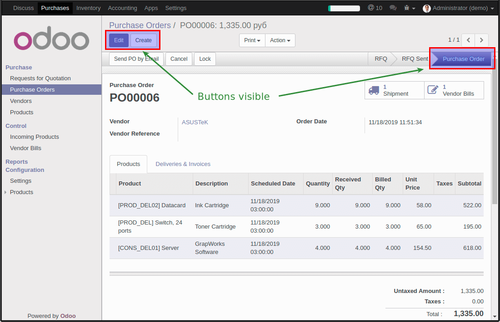
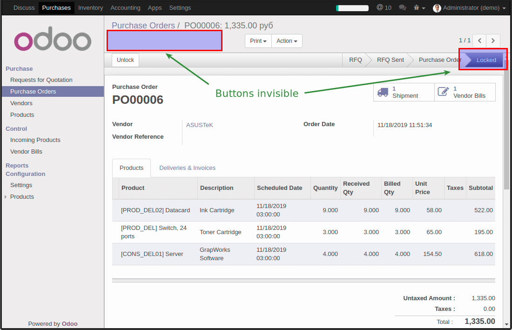

<section class="oe_container" charset="UTF-8">
    <div class="oe_row oe_spaced">
        <h2 class="oe_slogan" style="color:#875A7B;">Hide Action Buttons</h2>
        <div>
            This module provides ability to hide action buttons (Create/Edit)
            in form views based on conditions of record.
        </div>
        <h4>Steps:</h4>
        <div class="oe_span16">
            <ol>
                <li>install the module</li>
                <li>add computable boolean field named as "hide_action_buttons" for model</li>
                <li>implement computation by your business process for field hide_action_buttons</li>
                <li>insert the field "hide_action_buttons" in the form view of the model</li>
            </ol>
            <hr/>
            <h4>Before:</h4>
            
            <h4>After:</h4>
            
            <hr/>
            More details and code examples in the readme.md
        </div>
    </div>
</section>